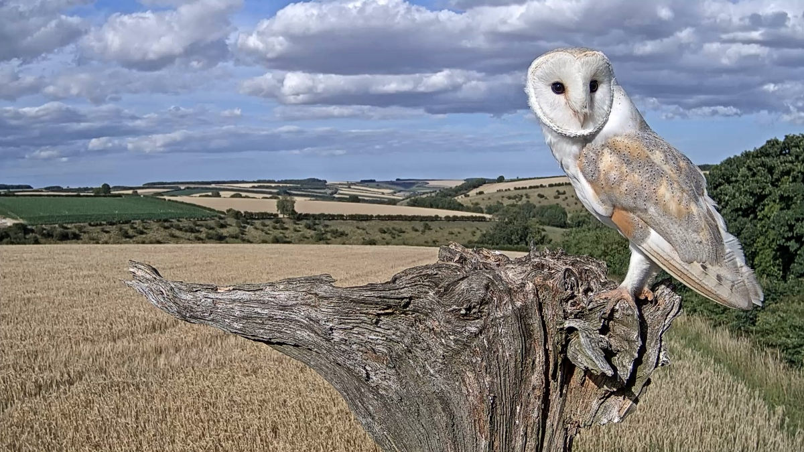

Elm Stump Nest
2022

Gylfie & Finn raised 3 chicks in this nest this year: Freya, Griffin, and Fern. (right)
This is Finn, below. Tragically he drowned in a water trough for livestock.

2021

The same pair raised 2 chicks: Nutmeg and Thyme. Also right. Gylfie is pictured below.

2020
Gylfie had a different partner before Finn. With Barney she had 2 broods in 2020.
The 1st brood's only survivor, Solo (above)
The 2nd brood consisted of Hans and Grete. Their eldest sibling, sadly, was attacked and killed by Solo.
Below, Hans on the right & Grete on the left.
2019
They had a clutch of 4, but only 3 hatched.
2018
Barney lost his 1st mate in 2017 and partnered with Gylfie. They had 3 chicks in 2018.
2017
Barney and his first mate raised 4 chicks here. They also raised 4 foster chicks, two of which are Finn and Hilda.
Hilda is sometimes seen in Ash Wood, and Finn is Gylfie's 2nd partner. Barney is pictured below.
Beech Stump
2022
Bomber and Luna are tawny owls who have been together for quite a long time.
Bomber has been here since 2013. He and Luna raised six chicks this year, but they were all foster chicks.
In previous years they have also taken on foster chicks.
Sycamore Stump Nest
2022
Willow and Ghost, barn owls, raised Skye, Spirit, and Echo.
2021
Mr & Mrs Kes raised their keslets here.
2020
Mr and Mrs Kes have always had this nest...
Ash Stump Nest
2022
Mr & Mrs Kes (kestrels) raised Gizmo, Dagmar, Raine, Jasmine, Duke, and Jeff here after Willow & Ghost took Sycamore.
2021
Willow & Ghost raised Ginger, Cinnamon, and Clove here.
Ash Wood
Ash Tree Nest
2022
Bonnie and Ozzy, tawny owls, raised 2 chicks here.
2021
They also raised Bramble and Sage here last year.
Ash Hollow Nest
2022
Kestrel pair Apollo and Athena raised Kessandra, Iona, Ava, Waldo, and Kevin here.
Three Trees Nest
2022
Barn owls Orion and Star moved in this year, but Star disappeared. In previous years Finn's sister, Hilda, lived there.